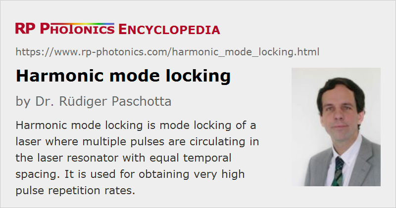

Harmonic Mode Locking
Definition: mode locking of a laser where multiple pulses are circulating in the laser resonator with equal temporal spacing
More general term: mode locking
German: harmonisches Modenkoppeln
Categories: light pulses, methods
How to cite the article; suggest additional literature
Author: Dr. Rüdiger Paschotta
Pulse trains with high pulse repetition rate are sometimes obtained with the technique of harmonic mode locking, where multiple ultrashort pulses are circulating in the laser resonator with a constant temporal spacing (see Figure 1). This technique is often applied in high (multi-gigahertz) pulse repetition rate fiber lasers, since their resonators can not be made short enough to achieve a high repetition rate with a single pulse (→ fundamental mode locking).
Harmonic mode locking is associated with some technical challenges:
- Additional means may be required for achieving a constant pulse energy. Without special measures, there may be fluctuating pulse energies, or even pulse drop-out.
- The circulating pulses are not always mutually phase-coherent, which can matter under certain circumstances.
- In the case of passively mode-locked lasers, it can also be difficult to obtain a stable pulse spacing, i.e. a low timing jitter.
Various kinds of instabilities are related to so-called supermode noise. If N identical pulses are circulating in the resonator with equal phase, only every Nth resonator mode is excited. Supermode noise means that stable oscillation on such a subset of resonator modes is not achieved; the laser may hop to different sets of modes, or exhibit simultaneous oscillation on different mode sets over longer times. The beat notes involved are associated with increased high-frequency laser noise, e.g. in the form of increased timing jitter.
There are a variety of methods for suppressing supermode noise. These involve measures such as inserting various types of intracavity spectral filters and/or using electronic feedback systems, or exploit nonlinear and dispersive effects. In many cases, the setup of a harmonically mode-locked laser becomes more sophisticated due to such requirements. On the other hand, once supermode noise is effectively suppressed, harmonically mode-locked lasers have the potential for substantially lower laser noise (e.g. timing jitter and phase noise), compared with fundamentally mode-locked lasers.
A variation of harmonic mode locking is called rational harmonic mode locking. Here, the modulation frequency is the round-trip frequency times the ratio of two integers. This also enforces a higher pulse repetition rate. In some cases, very high repetition rates have been achieved, but often with a non-constant pulse energy.
Questions and Comments from Users
Here you can submit questions and comments. As far as they get accepted by the author, they will appear above this paragraph together with the author’s answer. The author will decide on acceptance based on certain criteria. Essentially, the issue must be of sufficiently broad interest.
Please do not enter personal data here; we would otherwise delete it soon. (See also our privacy declaration.) If you wish to receive personal feedback or consultancy from the author, please contact him e.g. via e-mail.
By submitting the information, you give your consent to the potential publication of your inputs on our website according to our rules. (If you later retract your consent, we will delete those inputs.) As your inputs are first reviewed by the author, they may be published with some delay.
Bibliography
| [1] | M. Becker and D. J. Kuizenga, “Harmonic mode locking of the Nd:YAG laser”, IEEE J. Quantum Electron. 8 (8), 687 (1972), doi:10.1109/JQE.1972.1077271 |
| [2] | S. Longhi et al., “Third-order-harmonic mode locking of a bulk erbium:ytterbium:glass laser at a 2.5-GHz repetition rate”, Opt. Lett. 19 (23), 1985 (1994), doi:10.1364/OL.19.001985 |
| [3] | K. Tamura and M. Nakazawa, “Pulse energy equalization in harmonically FM mode-locked lasers with slow gain”, Opt. Lett. 21 (23), 1930 (1996), doi:10.1364/OL.21.001930 |
| [4] | S. Arahira et al., “Mode-locking at very high repetition rates more than terahertz in passively mode-locked distributed-Bragg-reflector laser diodes”, IEEE J. Quantum Electron. 32 (7), 1211 (1996), doi:10.1109/3.517021 |
| [5] | A. B. Grudinin and S. Gray, “Passive harmonic mode locking in soliton fiber lasers”, J. Opt. Soc. Am. B 14 (1), 144 (1997), doi:10.1364/JOSAB.14.000144 |
| [6] | B. C. Collings et al., “Stable multigigahertz pulse-train formation in a short-cavity passively harmonic mode-locked erbium/ytterbium fiber laser”, Opt. Lett. 23 (2), 123 (1998), doi:10.1364/OL.23.000123 |
| [7] | O. G. Okhotnikov and M. Guina, “Colliding-pulse harmonically mode-locked fiber laser”, Appl. Phys. B 72, 381 (2001), doi:10.1007/s003400100529 |
| [8] | O. Pottiez et al., “Supermode noise of harmonically mode-locked erbium fiber lasers with composite cavity”, IEEE J. Quantum Electron. 38 (3), 252 (2002), doi:10.1109/3.985565 |
| [9] | T. Yilmaz et al., “Supermode suppression to below −130 dBc/Hz in a 10 GHz harmonically mode-locked external sigma cavity semiconductor laser”, Opt. Express 11 (9), 1090 (2003), doi:10.1364/OE.11.001090 |
| [10] | Y. Deng and W. H. Knox, “Self-starting passive harmonic mode-locked femtosecond Yb3+-doped fiber laser at 1030 nm”, Opt. Lett. 29 (18), 2121 (2004), doi:10.1364/OL.29.002121 |
| [11] | Y. Deng et al., “Colliding-pulse passive harmonic mode-locking in a femtosecond Yb-doped fiber laser with a semiconductor saturable absorber”, Opt. Express 12 (16), 3872 (2004), doi:10.1364/OPEX.12.003872 |
| [12] | G. Zhu and N. K. Dutta, “Eighth-order rational harmonic mode-locked fiber laser with amplitude-equalized output operating at 80 Gbits/s”, Opt. Lett. 30 (17), 2212 (2005), doi:10.1364/OL.30.002212 |
| [13] | D. Panasenko et al., “Er-Yb femtosecond ring fiber oscillator with 1.1-W average power and GHz repetition rates”, IEEE Photon. Technol. Lett. 18 (7), 853 (2006), doi:10.1109/LPT.2006.871821 |
| [14] | S. Zhou et al., “Passive harmonic mode-locking of a soliton Yb fiber laser at repetition rates to 1.5 GHz”, Opt. Lett. 31 (8), 1041 (2006), doi:10.1364/OL.31.001041 |
| [15] | S. Gee et al., “Correlation of supermode noise of harmonically mode-locked lasers”, J. Opt. Soc. Am. B 24 (7), 1490 (2007), doi:10.1364/JOSAB.24.001490 |
| [16] | Li Zhan et al., “Critical behavior of a passively mode-locked laser: rational harmonic mode locking”, Opt. Lett. 32 (16), 2276 (2007), doi:10.1364/OL.32.002276 |
| [17] | G. Sobon et al., “10 GHz passive harmonic mode-locking in Er-Yb double-clad fiber laser”, Opt. Commun. 284 (18), 4203 (2011), doi:10.1016/j.optcom.2011.04.050 |
See also: mode locking, active mode locking, mode-locked lasers, fundamental mode locking
and other articles in the categories light pulses, methods
|  |
If you like this page, please share the link with your friends and colleagues, e.g. via social media:
These sharing buttons are implemented in a privacy-friendly way!